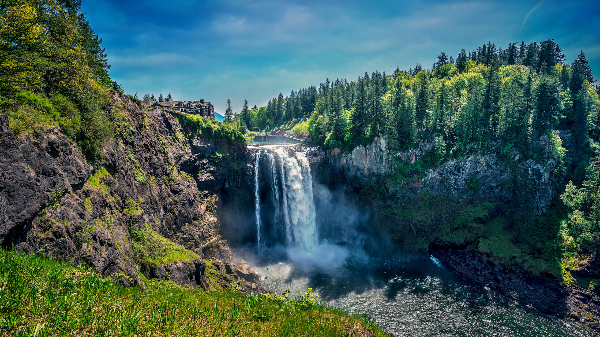
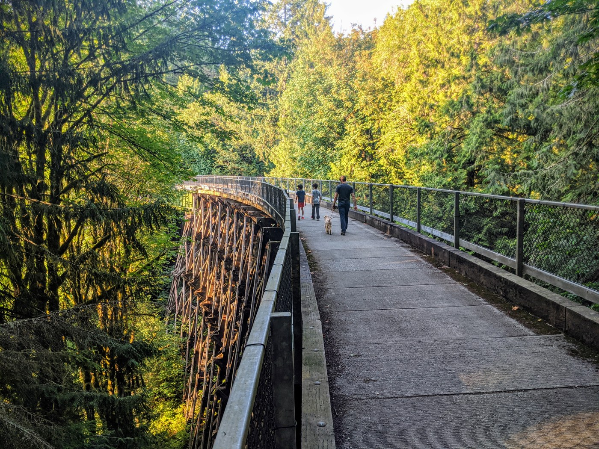

A Journey Through Nature's Splendor
This is a brief introduction to the Snoqualmie Falls hike...
This is a beginner hike with a gorgeous view and a bit of a steep hill. This is great for dog walks, excersizing, exploring, and getting amazing views/photos of the waterfall! This hike is by Snoqualmie pass, so it is pretty far from any city, but the trip is well worht it!

